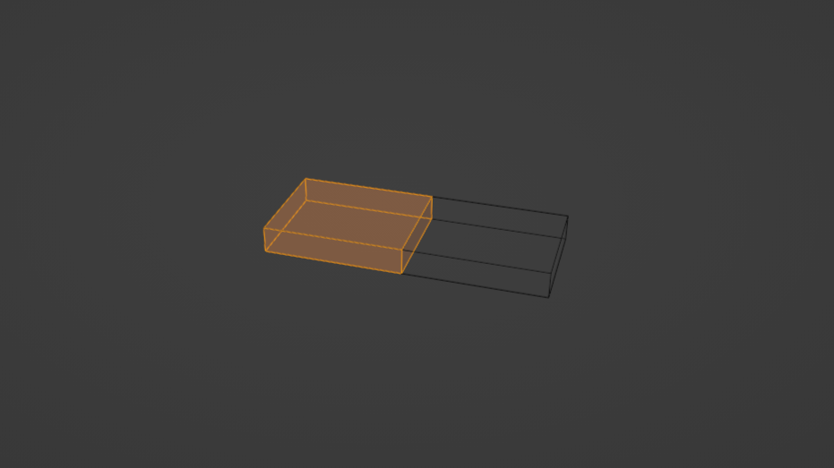
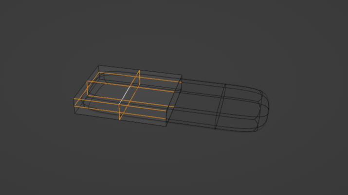
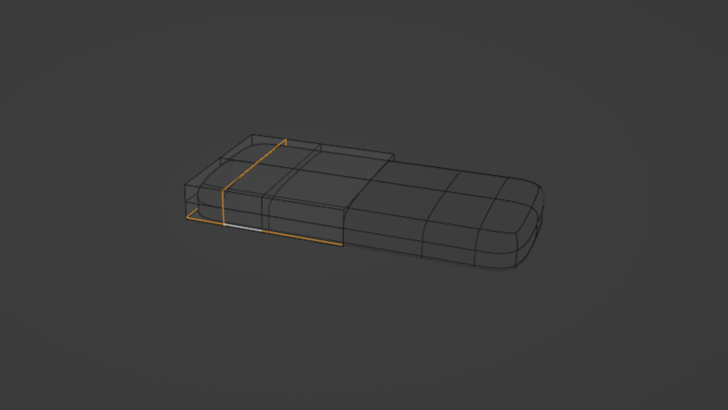
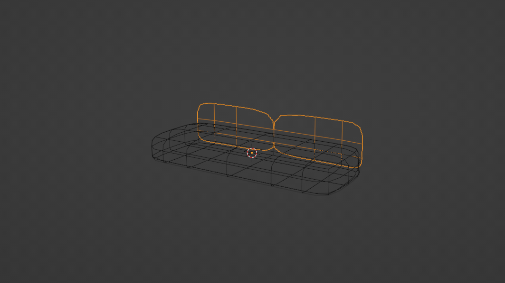
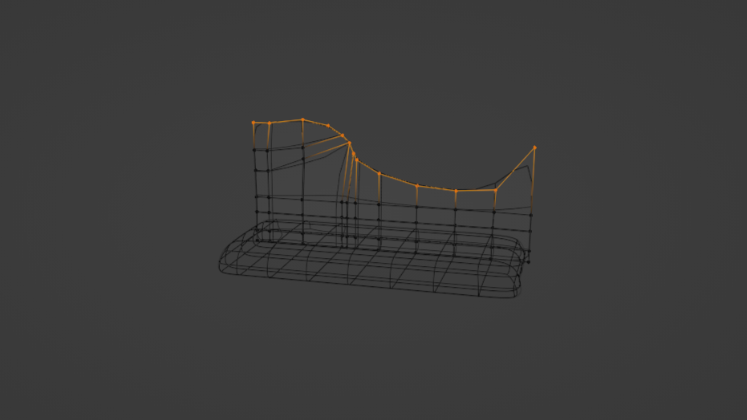
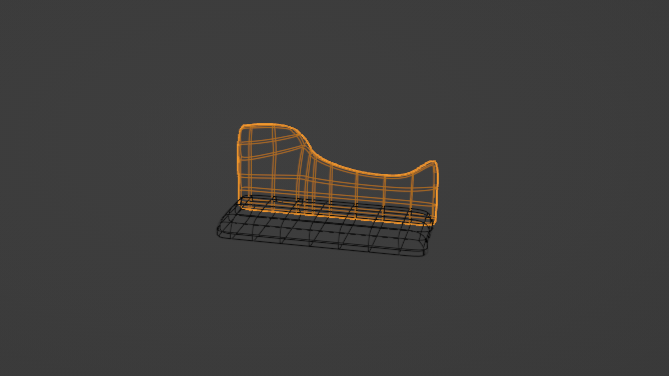
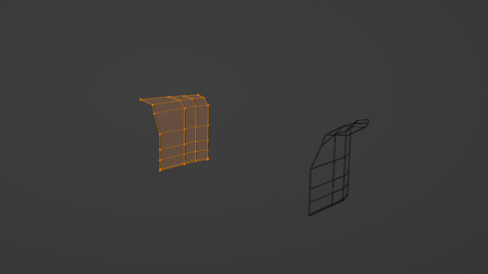
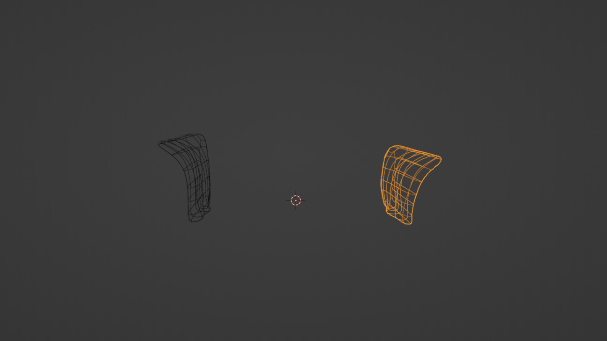
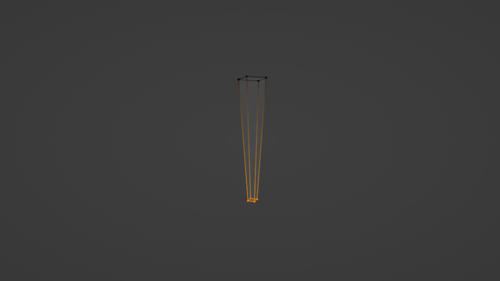
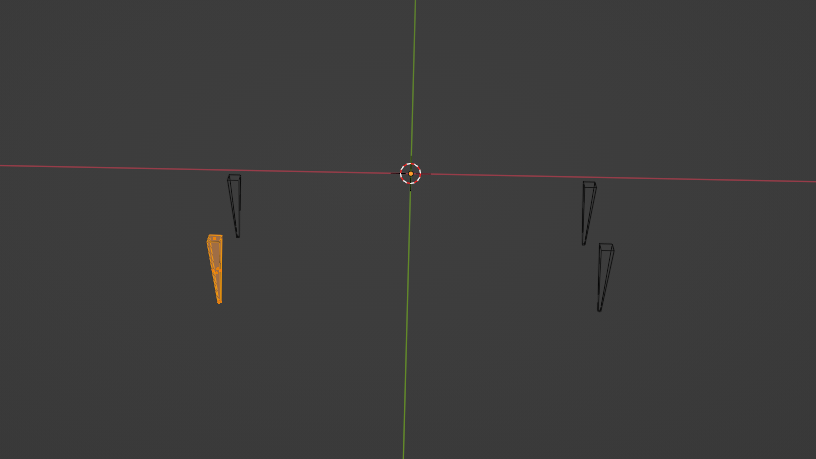

Create 3D assets and models of puzzles for an interactive experience 'Book & Pen’.
To produce a low poly models.
3D Artist
1.1 Research
1.2 References
1.3 Sketching
My task for this project was to create assets in our 3D game room.
Our interactive experience in a dark academia aesthetic environment.
I focused on the specific furniture in this style. Also, what the characteristic of
dark academia aesthetic in materials, patterns, textures, and the colour palette.
I found the dark academia aesthetic style required wood, particularly walnut, mahogany,
and it being elaborately carved. Also, that this style works well with rich texture, dark, drab
colours palette with forest and olive green.
Next, I focused on how to build our project assets: how many parts there are in the
model, and what they would be called.
The most complex was the piano asset. It is an intricate instrument with,
many parts and shapes, which was unclear to me.
This research helped - very much, as it answered all the questions I had, and then the next stages went smoothly.
This is our project asset references.
We chose these as they fit well with our interactive room atmosphere. Some
references have high poly details particularly the opened piano and settee
number 1. The Victorian settee number 1 has intricate carvings. It
suits our dark academic aesthetic style, but these decorations will add many polys
count which we needed to avoid. We have a limited number of faces, a maximum
2.500 polygons per mesh. Settee number 2 without body carvings - is simpler. I decided the whole model would look like settee number 2 without buttons on the back like number 1, and the cabriole legs would be pyramided. I also added the settee fabric and wood texture.
The opened piano has many parts, all adding numerous polygons. To optimise the
performance of our game and fit in the poly count amount, the piano model will be
closed without any internal parts.
This is additional references. I used them to create models that were added in the game room only for the video.
This is how the model will look. I sketched it in separate parts and numbered each one. It’s my plan sequence of how I will develop the settee. As well, I also identified the model materials.
Here is a one model of how I developed it.
I started with a cube form. To get the right model form, I added the standard dimensions for a three seat sofa length 87” depth 31” and seat height 10” The dimensions details I was using from the site dimensions.com.
Afterwards, on edit mode, I added a loop cut on Y axis (Ctrl R). Then I deleted half mesh and added a mirror modifier. This modifier mirrors my actions symmetrical.
Next action: I selected all mesh (A), right clicked on a mouse, then on the appeared mesh context menu I clicked on subdivide. It split my mesh faces, and then I used subdivision modifier at level 1. Thus now my mesh has the smooth appearance.
Then I added a couple loop cuts on the Y & X axis, and X axis loop cut I slightly grabbed downward. My mesh, the bottom part now looks not very rounded. Lastly, I shaded smooth.
I duplicated the back side of the seat mesh and separated it.
Afterwards, on edit mode, I selected the top edges and extruded upward 1 time.
Then I applied the mirror modifier, because my model back side must be not symmetrical. The left side is higher than the right side. Thus, in the next step, I selected the half back top edges of this mesh and extruded upward a few times. Then I extruded one time on the opposite side by selecting edges. Afterwards, I added a couple of loop cuts in Z axis, and I selected top vertices and then downward and some upward by using proportion editing till I got the correct back mesh like my sketch.
I then made a thickness for the mesh by adding a solidify modifier and shaded smooth.
I selected the mesh side faces, I duplicated and separated.
Then on edit mode, I selected the top edges and extruded upward a few times. To get the bend part, I grabbed the top edges to the left side a bit and again extruded.
Next, I formed the mesh for look nicer, like a curved arm, by adding a few loop cuts, and then grabbed vertices by using proportional editing.
Lastly, I added thickness, shaded smooth and applied mirror modifier.
I applied the mirror modifier, because my model right side must be shorter than the opposite side. Afterwards, on edit mode, I selected the right arm bottom vertices and deleted them. Then, I filled (short cut F) the hole by selecting the bottom part edges. Finally, I selected all mesh (short cut A) and moved downward till it looked symmetrical from the bottom with left side mesh.
I used a cube. Then I scaled down and again scaled in Z axis.
Afterwards, I went to vertices mode (short cut 1), and by selecting the mesh bottom vertices, I scaled inward.
On the end, I added the mirror modifier and used the X & Y axis.
At this stage, the surfaces of the object model are given the necessary properties to make it more realistic.
Textures were created in a blender using principled BSDF nodes. I created a velvet fabric maire colour for our settee, the piano stool seat part a leather texture. The piano is simply a black colour shade, and I added some glossiness. The rest of the models use the image wooden texture with gold colour metallic decorations, such as furniture handles, legs, and parts of the globe.
The main globe part was created in Photoshop using an Adobe stock world map image.
For the cloth, I used a velvet BSDF reflection node.
To make scratches, I added image texture, MixRGB node, and connected them. I also added a mapping node (short cut Ctrl T) and scaled up the image texture till values 3.
Then I added colour, and to make it visible, I increased a factor value.
For the leg, I have used image texture. For a quicker way to apply images on a model, I did these steps. I held keys Ctrl + shift and hit 'T'. Then in the open window, I chose the file where my image textures are, selected them all by hitting 'A', and finally I pressed a button 'Principled Texture Setup'. It automatically connected all images to principled BSDF. This is 3 images, in which one gave a colour of material, another a roughness image controlled the sharpness of the reflections, and a normal map gives small size bumps.
Body
The piano texture I created by adding base colour black. I increased a metallic value, and to make the model glossy, I reduced the roughness amount.
Piano Keys
The keys white and black. The same material as the body. To make the white keys white, I increased the base colour value. Then these keys looked metallic. To fix that, I reduced the metallic value and increased the roughness value.
Hardware
All piano hardware, hinges, wheels and pedals, I used the same material. I added a base colour yellow, increased a metallic value till 1 and to look material shiny, I reduced roughness to 0.35.
The globe part texture I created in Photoshop. To make it look like an aged style I used old paper texture. Afterwards, I added a world map texture and merged, then I colourised. The final step was to apply it into the model in a blender by adding an image texture node to the principled BSDF base colour.
For the globe stand I use the same material as piano hardware, but I made lighter by increasing a colour value.
I tried to make textures similar to my globe reference. However, I had issues with measuring bar texture, not knowing how to add it correctly. The bottom base I made was wooden, but the texture was stretched. There was no more time to fix that, because all the assets needed to be ready for the game. My decision was to go in a simple way to make all these parts the same colour and metallic.
The wooden texture issue became clear to me later. I fixed it when I correctly unwrapped. I have added the model here with both different stand textures.
Here are a few more renders of what I created in this project period. These models are not for use in our group game. Some of them are numerous polygons. I created them to use in the games room for the video to make the room look more aesthetic. Also, I was curious how to make them.

These are our team clues and puzzles, which I developed in 3D. They are all placed in VR space.
I guided my globe reference. I tilted the globe to the left from the front view by 23.4 degrees, like our Earth obliquity. To ensure my globe rotated to this axis, I switched the rotation axis to local. Afterwards, I added an empty object. Then I selected the globe, clicked on the constraint tab, and added a copy rotation constraint and selected the empty object as target. I needed to copy only the target Z location. Thus, I disabled X & Y rotations and switched to local space for the owner. Time to animate. At frame 1 in the timeline, I hit 'I' on the viewport and inserted a rotation key. Then I went to frame 100, and I increased the Z rotation value a bit, and by right clicking I added a key frame. Animation is working, but in the end the rotation is slowing down. By default, it uses bezier interpolation. To get the constant speed on the timeline, I pressed 'T' and changed the key frame interpolation to linear. Next, I needed my globe to rotate non stop, thus I did the cycles animation. I went to Graph editors and pressed the 'N' key, then clicked on the modifier tab, adding a cycles modifier. Then it has another issue, it runs back all the time. I fixed this problem by switching to repeat with the offset option. Animation done.
This video is about our team project. It shows who made this project and the main idea of our interactive experience.
I created this video to get practiced in video editing: how to cut, splicing, add effects, to understand how to animate objects, deform, vanishing them.
I rendered animation in PNG output format. Then I added all parts of the renders image sequence to video editing. I cut, deleted some part. The view was unclear. I then spliced it all into meta strip (Ctrl +G) and by choosing FFmpeg Video format, I made the final video.
This work, I could say, was my high ambition for the first year.
There are several mistakes. The cameras movement, speed, the particle systems not vanishing as I wanted, text issues, etc. I did not fix it because rendering animation takes time, particularly for the high resolution.
Creating this video enabled me to have excellent experience.
I made mistakes, but I also learnt a great deal from it, so my animation skills and video editing abilities will be improved in other projects.